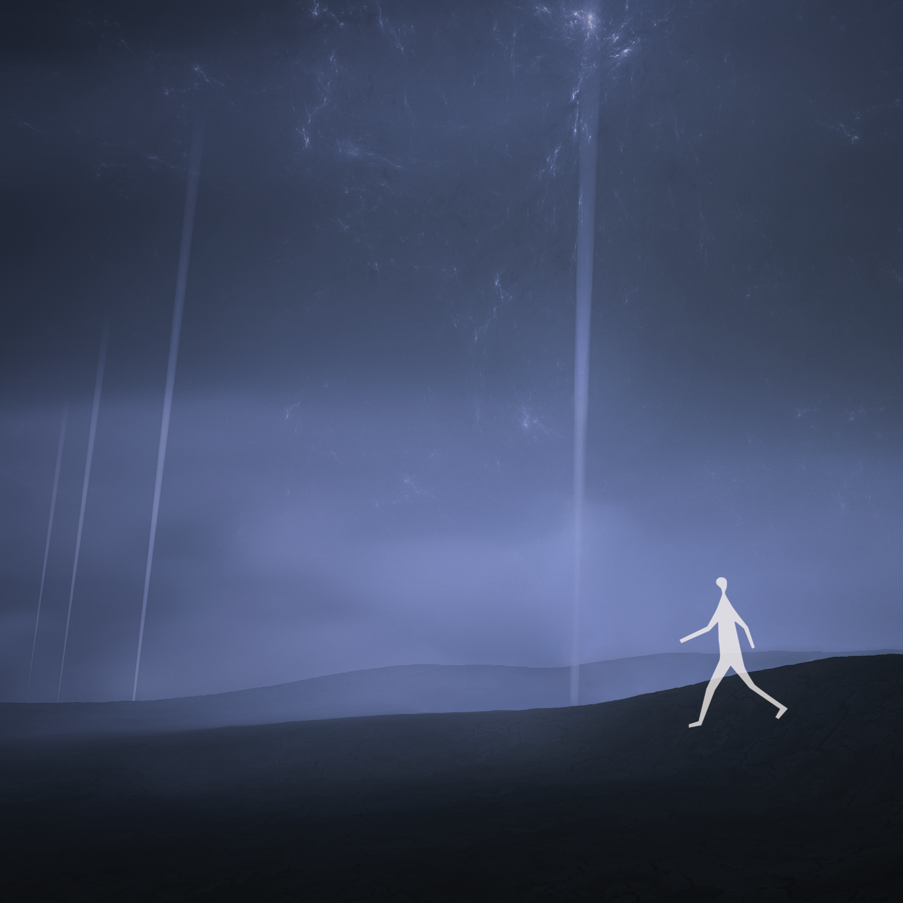
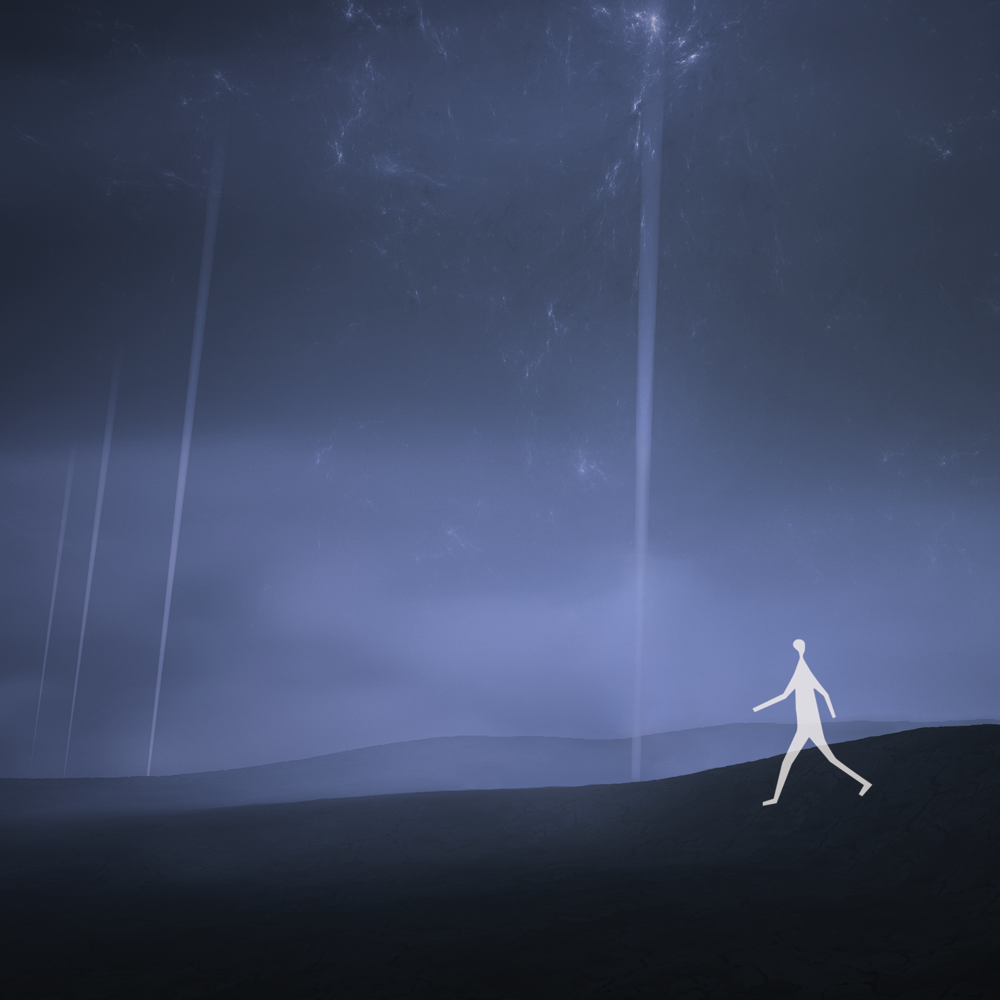

The Plan
The Plan is visual representation book of the journey of a character who is lost in life, desperately searching for a path that leads to somewhere. It is a reflection of the human condition, where we all at times feel uncertain and overwhelmed by the twists and turns of life's journey. The visuals and writing are meant to evoke a sense of despair and a glimmer of hope. It is my hope that viewers will connect with the character's journey and find inspiration in their own lives to continue searching for a path that leads to somewhere. The character in my artwork is depicted as being lost in a a dark and foreboding landscape, filled with shadows and uncertainty, with no clear direction or sense of purpose.
Amidst the chaos of my thoughts,
I hold fast to this plan,
Its destination shrouded in mystery,
An elusive sanctuary I cannot see.
Lost and alone,
I wander aimlessly,
Yearning for a place to hide,
To escape what entangles me.
As the sun dips below the horizon,
I am left adrift,
No light to guide me,
No shadow to keep me company.
Something is amiss,
I feel it deep within,
An endless ache that haunts me,
A longing for something more.
I sit here, trapped in my own mind,
Lost in a world of endless dreams,
Hoping for a glimmer of light,
A sign that I can break free.
But time slips through my fingers,
A second, a minute, an hour, a day,
A year since I began,
Desperate for a change that never comes.
All I can do is dream,
Of a world vibrant and green,
A place where I can finally belong,
And be free from the weight of my fears.
 
